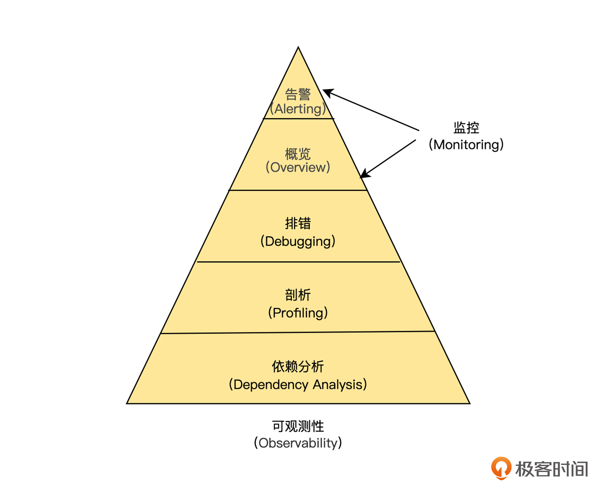

- 00 开篇词 掌握好学习路径，分布式系统原来如此简单.md.html
- 01 导读：以前因后果为脉络，串起网状知识体系.md.html
- 02 新的挑战：分布式系统是银弹吗？我看未必！.md.html
- 03 CAP 理论：分布式场景下我们真的只能三选二吗？.md.html
- 04 注册发现： AP 系统和 CP 系统哪个更合适？.md.html
- 05 负载均衡：从状态的角度重新思考负载均衡.md.html
- 06 配置中心：如何确保配置的强一致性呢？.md.html
- 07 分布式锁：所有的分布式锁都是错误的？.md.html
- 08 重试幂等：让程序 Exactly-once 很难吗？.md.html
- 09 雪崩（一）：熔断，让故障自适应地恢复.md.html
- 10 雪崩（二）：限流，抛弃超过设计容量的请求.md.html
- 11 雪崩（三）：降级，无奈的丢车保帅之举.md.html
- 12 雪崩（四）：扩容，没有用钱解决不了的问题.md.html
- 13 可观测性（一）：如何监控一个复杂的分布式系统？.md.html
- 14 可观测性（二）：如何设计一个高效的告警系统？.md.html
- 15 故障（一）：预案管理竟然能让被动故障自动恢复？.md.html
- 16 故障（二）：变更管理，解决主动故障的高效思维方式.md.html
- 17 分片（一）：如何选择最适合的水平分片方式？.md.html
- 18 分片（二）：垂直分片和混合分片的 trade-off.md.html
- 19 复制（一）：主从复制从副本的数据可以读吗？.md.html
- 20 复制（二）：多主复制的多主副本同时修改了怎么办？.md.html
- 21 复制（三）：最早的数据复制方式竟然是无主复制？.md.html
- 22 事务（一）：一致性，事务的集大成者.md.html
- 23 事务（二）：原子性，对应用层提供的完美抽象.md.html
- 24 事务（三）：隔离性，正确与性能之间权衡的艺术.md.html
- 25 事务（四）：持久性，吃一碗粉就付一碗粉的钱.md.html
- 26 一致性与共识（一）：数据一致性都有哪些级别？.md.html
- 27 一致性与共识（二）：它们是鸡生蛋还是蛋生鸡？.md.html
- 28 一致性与共识（三）：共识与事务之间道不明的关系.md.html
- 29 分布式计算技术的发展史：从单进程服务到 Service Mesh.md.html
- 30 分布式存储技术的发展史：从 ACID 到 NewSQL.md.html
- 春节加餐 技术债如房贷，是否借贷怎样取舍？.md.html
- 春节加餐 深入聊一聊计算机系统的时间.md.html
- 春节加餐 系统性思维，高效学习和工作的利器.md.html
- 结束语 在分布式技术的大潮流中自由冲浪吧！.md.html
- 捐赠
13 可观测性（一）：如何监控一个复杂的分布式系统？
你好，我是陈现麟。
通过学习“雪崩”系列的内容，我们掌握了构建一个稳定的分布式系统所需的四大方法：熔断、限流、降级和扩容，再也不用担心由于一个局部的小问题，导致整个系统出现重大的故障了。
在“雪崩”系列课程中，我们曾经提到需要基于系统内部的运行状态，来进行相应的降级和扩容操作，特别是在扩容机制中，需要通过服务过载的信息来进行相应的扩容，可是我们应该如何来获得系统内部的运行状态呢？
其实这就是分布式系统中的可观测性问题，那么从这节课开始，我们将用 2 节课的时间来讨论，如何通过分布式系统的可观测性，来解决系统监控与告警的问题。在这一节课中，我们先讨论需要监控的原因，然后分析监控与可观测性之间的关系，接着介绍搭建一个可观测性系统涉及的开源组件，最后，重点讨论对于一个大规模的分布式系统，设计监控系统应该遵循的经验和原则。
为什么需要监控
如果一辆汽车没有仪表盘，我们就不知道汽车当前的速度，只能凭着感觉开，很容易出现超速甚至意外，另外由于不知道当前还有多少汽油或者电量，一不小心就会因为能源耗尽抛锚在路上。监控之于分布式系统，更甚于仪表盘之于汽车，因为分布式系统的内部更加复杂，更容易出现意外的情况。那么对于“为什么需要监控”的这个问题，我们就从监控有哪些作用的角度来回答。
第一，从规则角度，监控信息是扩容、缩容和报警等规则的数据来源。只有通过监控了解了系统的状态信息，才能基于状态信息设置一定的规则，当规则满足后，就触发扩容、缩容和报警等相关处理。
第二，从全局角度，基于监控信息，我们才能构建监控大盘。监控大盘能让我们快速地了解当前系统的情况，并且能回答当前系统表现的一些基本问题。
第三，从长期角度，通过监控信息，可以分析系统的长期趋势。比如从系统当前磁盘的使用情况和增长速率，我们可以推测出什么时候需要进行扩容。
第四，从实时角度，在系统出现变更的时候，可以通过监控系统，迅速了解最新的变更是否异常。比如缓存命中率是否下降，请求时延是否变长。
第五，从调试角度，当系统出现报警信息的时候，通过监控系统能帮我们快速定位问题。在前面的“雪崩”系列中，虽然我们已经知道如何保障系统的稳定性了，但是既然故障出现了，就一定要定位到根本原因，然后彻底去解决。
监控和可观测性之间的关系
在 2018 年以前， IT 领域一直使用监控这个术语，来表示通过采集系统、服务和网络的内部信息，诊断和预测系统的行为。到了 2018 年， CNCF Landscape 率先出现了 Observability 的概念，将可观测性（ Observability ）从控制论（ Cybernetics ）中引入到 IT 领域。
在控制论中，可观测性是指系统可以由其外部输出，来推断其内部状态的程度，系统的可观察性越强，我们对系统的可控制性就越强。自此以后，“可观测性”逐渐取代了“监控”，成为云原生技术领域最热门的话题之一。
那么，在 IT 领域中，为什么会用“可观测性”逐渐取代“监控”呢？我们先来感性认识一下，一般来说，监控主要告诉我们以下的信息，这些信息主要表现为结果。
- CPU 超过 80% 。
- 系统负载超过 200% 。
- 机器宕机了，服务崩溃了。
而一个可观测系统，除了告诉我们这些结果信息之外，还需要能回答出导致这些结果的原因。
- 性能问题是由什么原因导致的？瓶颈在哪里？
- 请求执行过程都需要经过哪些服务？请求失败的原因是什么？
- 每个服务如何处理请求？服务之间的依赖关系是什么样的？
从上面的对比中，我们可以初步了解到监控和可观测性之间的区别，接下来，我们再进一步从基本概念的角度，来讨论监控和可观测性概念的差别。
如下图，在 IT 建设中，我们将“可观测性”能力划分为 5 个层级，其中告警（ Alerting ）与应用概览（ Overview ）都属于传统监控的概念范畴，因为触发告警的往往是明显的症状与表象。但在云原生时代，架构与应用部署方式的变化是非常频繁的，不告警并非意味着一切正常，因此，通过获取系统内部的信息，来主动发现（ Preactive ）问题就显得非常重要了。

可观测性通过排错、剖析与依赖分析，这三个部分来主动发现故障，具体如下。
- 排错（ Debugging ），即运用数据和信息去诊断故障出现的原因。
- 剖析（ Profiling ），即运用数据和信息进行性能分析。
- 依赖分析（ Dependency Analysis ），即运用数据信息追踪系统模块的依赖关系，进行关联分析。
并且，这三部分的逻辑关系是：首先，无论是否发生告警，运用主动发现能力，都能对系统运行情况进行诊断，通过指标呈现系统运行的实时状态；其次，一旦发现异常，逐层下钻，进行性能分析，调取详细信息，建立深入洞察；最后，调取模块与模块间的交互状态，通过链路追踪构建“上帝视角”。
因此，主动发现能力的目的，并不仅仅是为了告警与排障，而是通过获取最全面的数据与信息，构建对系统、应用架构最深入的认知，而这种认知可以帮助我们提前预测与防范故障的发生。
通过上面的讨论，我们可以看出可观测性是监控的扩展和进化，监控是建立在可观测性收集的数据之上的，我们可以结合下图，从三个维度进行理解。
首先，监控到可观测性是从黑盒往白盒方向的进化。监控更注重结果，即当前出现了什么问题，或者将要出现什么问题；而可观测性也同等关注问题出现的原因，即通过内部状态的展示来回答这个问题。
其次，监控到可观测性是从资源往服务方向的进化。监控的使用主体主要是运维，监控的对象主要为系统资源相关，而在云原生时代，分布式系统越来越复杂，仅仅通过系统层面监控是远远不够的，所以可观测性使用的主体引入了研发。通过研发的加入，增加了服务内部状态和服务之间调用关系的暴露，大大增强了我们对系统的控制力。
最后，监控到可观测性是处理方式从被动监控到主动分析的进化。在监控为黑盒的情况下，我们完全不了解系统内部的情况，只能等待监控信息触发报警后，再进行处理；而当监控为白盒的情况下，研发人员可以方便地了解系统内部运行的情况，并且进行分析，主动发现问题。
可观测性系统的开源组件
搭建一个可观测性平台，主要通过对日志（ Logs ）、链路（ Traces ）与指标（ Metrics ）这三类数据进行采集、计算和展示，它们的具体信息如下。
日志信息（ Logs ），即记录处理的离散事件。它展现的是应用运行而产生的信息，或者程序在执行任务过程中产生的信息，可以详细解释系统的运行状态。虽然日志数据很丰富，但是不做进一步处理，就会变得难以查询和分析。目前，我们主要通过 ELK 来处理。
追踪链路（ Traces ），处理请求范围内的信息，可以绑定到系统中，单个事务对象的生命周期的任何数据。在很大程度上， Traces 可以帮助人们了解请求的生命周期中，系统的哪些组件减慢了响应等。目前，我们主要通过分布式调用链跟踪系统 Jaeger 来处理。
指标信息（ Metrics ），它作为可聚合性数据，通常为一段时间内可度量的数据指标，透过它，我们可以观察系统的状态与趋势。目前，我们主要通过 Prometheus 进行采集和存储，通过 Grafana 进行展示来解决。
基于上面的开源组件，我们可以很方便地搭建一个可观测性平台，来提升极客时间后端分布式系统的可观测性。
同时，我们也可以看出，当前对于可观测性的三类数据 Logs 、 Traces 和 Metrics 的处理系统是割裂的，这会导致它们相互之间的数据不通、标准不统一、组件繁杂。所以 CNCF 社区推出了 OpenTelemetry 项目，旨在统一 Logs、 Traces 和 Metrics 三种数据，实现可观测性大一统，这是一个非常有雄心的计划，目前正在推进中，我们敬请期待。
监控系统的设计经验
在可观测性的五个层次中， Overview 和 Alerting 这两个部分和业务结合得非常紧密，完全是依照业务场景来定制的。并且 Overview 是我们使用可观测性系统主要的入口， Alerting 是可观测性系统将故障通知到工程师的通道，在可观测性系统中，它们是和工程师日常工作非常紧密的两个部分。
因此，一个设计良好的 Overview 和 Alerting 非常影响可观测性系统整体的使用效率和体验，那么接下来，我就将我在工作过程中，对设计 Overview 总结的一些经验分享给你， Alerting 将会在下一课中介绍。
分层设计，每一层都有自己的 Overview
在公司中，每一个层级的工程师，所关心的目标是不一样的，所以， Overview 应该分层设计，你关心的目标是什么，你的 Overview 就应该展示什么。一般来说，层级越高，关心的事情越偏业务，不要将各层的关注点混合在一起。
首先，对于整个研发部门来说， Overview 展示的是，能够实时体现公司业务状态最核心的指标，例如 Amazon 和 eBay 会跟踪销售量， Google 和 Facebook 会跟踪广告曝光次数等与收入直接相关的实时指标；而 Netflix 由于是订阅制，销售数据不实时反映业务的情况，则通过反映用户满意度的指标——播放按钮的点击率来替代，即视频每秒开始播放数，简称为 SPS（ Starts Per Sencond ）。
其次，对于运维研发、 DBA 、基础服务之类的各级研发团队，同样需要有自己的 Overview ，总体原则依然是，团队的目标是什么， Overview 就应该展示什么，并且整个团队的人都需要关心这个 Overview。
最后，最低一层的 Overview 对象不是工程师，而是为每一个服务、机器节点建立 Overview 。因为相对于部门组织来说，工程师的数量大，并且变化比较频繁， Overview 的维护成本非常大。并且，个人查看自己负责的服务和机器的 Overview 需求，可以通过团队、服务和机器节点的 Overview 来解决。
通过对 Overview 分层设计，保证了每一层的专注力都能聚焦在核心指标上，如果上层指标出现异常，我们可以查看下一层的指标，进一步诊断问题，并且结合 Logs 和 Traces ，直到找到问题发生的原因。
少就是多， Overview 不要超过一个页面
在分层设计中，我们已经知道对 Overview 进行分层设计的方法了，这里我们主要来讨论 Overview 内容的设计经验。
除了上文提到的“ Overview 应该分层设计，你关心的目标是什么，你的 Overview 就应该展示什么”之外，还有一个非常重要的原则是，一个 Overview 不应该超过一个页面。
首先，在使用上，我们经常要持续观察系统的情况，如果一个 Overview 有多个页面，我们就需要不停地切换，这非常影响我们的专注力，效率非常低。
其次，在内容上， Overview 的信息应该越精简越好，精简到不能再精简为止，如果超过了一个页面，就说明信噪比比较低，聚合和精简做得不彻底。
最后，在日常维护上，Overview 不超过一个页面，相当于规定了指标的最大数量，也就避免了我们只增加指标，从来不去清理的问题。
四个黄金指标
Google SRE 团队在介绍它的监控系统时，明确说明监控系统的四个黄金指标是延迟、流量、错误和饱和度，如果系统只能监控四个指标，那么就应该监控这四个指标，具体介绍如下。
延迟是指服务处理某个请求所需要的时间。我们在计算延迟的时候，应该区分成功的请求和失败的请求，比如，某一个接口的一个实例触发了熔断，被熔断的请求时延非常低，如果将熔断的请求时延和正常请求一起统计的话，就会产生误导性的结论。
流量是用来度量系统负载的。对于 API 接口来说是请求的 QPS ；对于音视频流媒体来说，是并发数或者网络 I/O 速率。
错误是指请求失败的速率，包含显示错误，比如 HTTP 500 以及隐式错误，比如 HTTP 200 回复中包含的错误。
饱和度描述的是，系统当前的负载占满载的百分比，一般来说，以整个系统最受限的资源的指标来表示，比如，对于 Redis 这样的内存系统，内存就是它的饱和度指标，假设当前机器使用内存为 16 G ，机器总内存为 32 G ，那么当前系统的饱和度为 50%。
选择合适的度量方法和采样频率
分位值是指把所有的数值从小到大排序，取前 n% 位置的值，即为该分位的值。它更加能描述数据的分布情况，比如，请求时延 60% 的分位置为 3 s ，说明有 60% 的请求时延小于或者等于 3 s ，40% 的请求时延大于或者等于 3 s ，依据这个信息，我们就能判断出，当前接口时延大于 3 s 的比例。
由于平均值容易受到少数极值的影响，所以，当请求时延的平均值为 3 s 时，我们不能判断出接口时延的真实情况。比如， 100 个请求的时延为 10 ms，有 1 个请求的时延为 102 s 的情况下，虽然平均时延很大，但是 99% 的请求时延都很快，在 10 ms 以内。
一般情况下，我们经常会通过计算多个分位值，来进一步了解数据的分布情况，比如，请求的时延情况，我们经常会通过 80% 、90% 、99% 、99.9% 多个分位值来度量。
而对于采样频率，我们需要对系统的不同部分，选择不同的频率。比如 CPU 使用率的变化是非常大的，我们可以选择 1 s 采集一次，而对于变化非常缓慢的磁盘容量， 1 分钟一次的频率可能都高了。
并且，我们可以通过降低历史数据的采样频率，来降低存储空间，提高访问速度。比如，对于 CPU 使用率，超过一个月的数据，可以从 1 s 一个采样点，聚合为 1 分钟内只保留 3 个数据：最大值、最小值和平均值。
总结
本节课，我们先从规则、全局、长期、实时和调试的角度，分析了需要监控的原因，这样你就明白了监控的重要性。
通过讨论两个很容易混淆的概念，即监控和可观测性之间的关系，我们将多个维度进行对比，得出监控是可观测性的一部分，可观测性是监控的扩展和进化这个结论。
为了了解开源社区主流的实现方式，我们介绍了可观测系统需要收集的关键数据：日志（ Logs ）、链路（ Trace ）与指标（ Metrics ），这样你就知道如何搭建一个可观测性平台了。
最后，我们讨论了监控系统的设计经验，依据这些设计经验，你在设计一个监控系统的时候，就能游刃有余了。
思考题
你平时在使用监控系统的过程中，碰到最大的痛点是什么呢？
欢迎你在留言区发表你的看法。如果这节课对你有帮助，也推荐你分享给更多的同事、朋友。
© 2019 - 2023 Liangliang Lee. Powered by gin and hexo-theme-book.